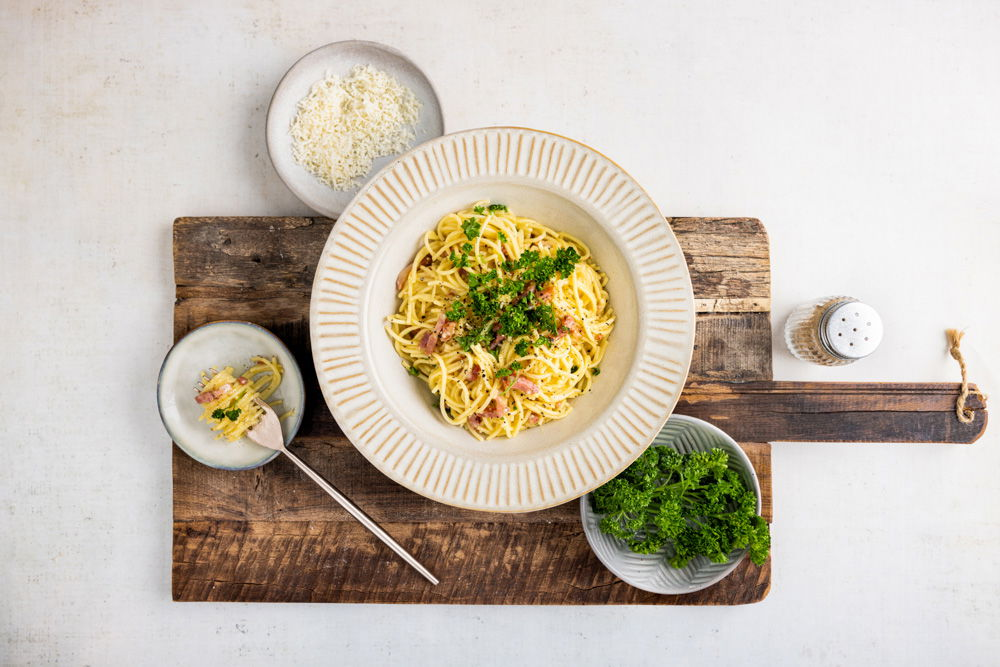

Avond Eten

Ingredienten
- 200 gr spaghetti
- 75 gr Parmezaanse kaas
- 2 takjes krulpeterselie
- 125 gr spekreepjes
- ½ tl zout
- 2 eieren
- ¼ tl zwarte peper
Bereiding
- Breng een pan water aan de kook en bereid de spaghetti volgens de aanwijzingen op de verpakking. Giet de spaghetti af en bewaar een soeplepel van het kookvocht.
- Rasp de Parmezaanse kaas fijn. Verwijder de blaadjes peterselie van de takjes en snijd grof. Verhit een pan zonder olie en bak de spekreepjes in 5 min. krokant.
- Meng de spekjes, Parmezaanse kaas, 2 el kookvocht en het zout door de spaghetti.
- Splits de eieren en klop de eidooiers los. Voeg het eigeel toe aan de spaghetti en blijf goed roeren zodat de eieren niet stollen. Voeg, indien de pasta te droog is, extra kookvocht toe.
- Verdeel de pasta over de borden en garneer met peterselie en peper.